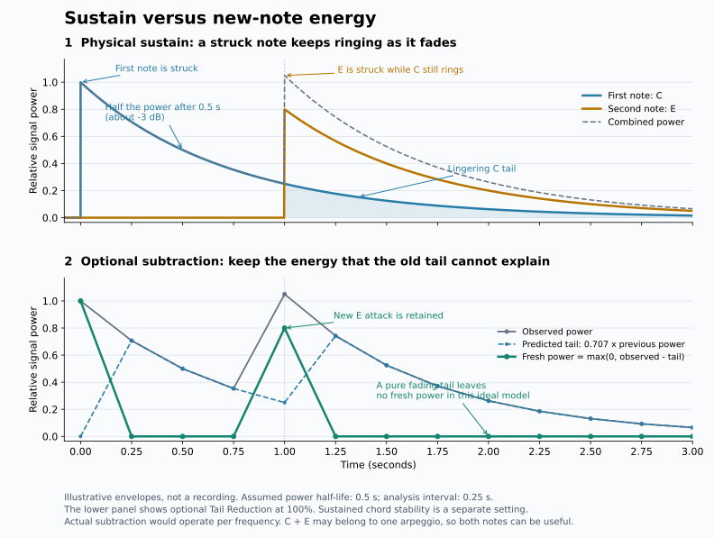

ChordPilot keeps measured audio evidence separate from chord interpretation. Expand a topic to see what is measured, what is averaged, and what the stability setting changes.
From audio to a chord
Audio sourcesFull mix or accompaniment; bass supplies root and inversion evidence when available.
Timing cellsThe grid divides audio into short ranges. Each cell has a spectrum and pitch strengths.
Chosen sequenceAuto timing stabilizes uncertain choices when enabled and groups cells into chord events.
Audio includes new attacks, ringing notes, and instrument overtones. A spectral peak is evidence of a frequency, not proof that a separate key was played.
Analysis presets for instrument textures
Choose a preset under Analysis Options, then adjust any control. Presets are starting points: instruments, pedal, distortion and reverb can change the pitch evidence. General uses the existing defaults. Editing a preset's timing or filtering controls shows Custom; saved sessions retain the actual values.
Preset
Grid / stability
Tail reduction / half-life
Overtone weighting
General
One beat / Detailed
0% / 0.5 s
50%
Clean Guitar / Arpeggios
One beat / Sustained
20% / 0.5 s
0%
Piano / Sustained Keys
Half beat / Sustained
20% / 0.5 s
0%
Reverb / FX
Half beat / Balanced
20% / 0.8 s
50%
Fast Chord Changes
Half beat / Detailed
0% / 0.5 s
50%
All presets use Auto changes and preserve your key, source stem, separation model, tempo settings and lyrics settings. Choosing a preset does not start analysis; use Reanalyse Chords to update existing results with cached stems. New Local Studies inherit the current tail and overtone settings. Existing saved studies keep their own settings.
The clean-guitar settings were checked on Ballad's opening. Piano and Reverb / FX are conservative starting points awaiting broader instrument-specific reference checks. FX differ: longer tail estimation addresses ringing, while overtone weighting targets supported harmonic peaks; it cannot remove every effect or separate an overtone from every played note.
Detailed, Balanced, and Sustained stability
Chord Stability applies to Auto changes. Fixed grid and Legacy skip this pass. Sustained helps recognize one harmony across guitar or piano arpeggios. It stabilizes chord choices; it does not subtract lingering notes.
Setting
Local / context score
Context radius
Normal change cost
Detailed
No extra stability pass
—
—
Balanced
85% / 15%
±1 bar
0.8 score units
Sustained · arpeggios
60% / 40%
±2 bars
1.6 score units
Context averages neighboring cells, including earlier and later audio. The highest-scoring sequence wins after subtracting chord-change costs. There is no fixed minimum chord duration.
w is 0.15 for Balanced or 0.40 for Sustained. With weak bass evidence, complexity cost is λ × max(0, chord-tone count − 5), with λ = 0.35 or 0.70 respectively. A five-note maj9 chord has no extra cost from this term.
Keeping the same chord costs 0. Related voicings or extensions cost 55% of the normal change cost: 0.44 in Balanced or 0.88 in Sustained.
A confirmed bass change or silence boundary reduces the change cost to 0.05. Bass confidence of at least 62% constrains competing root and inversion choices.
A clear local triad contrasting with nearby roots protects the local chord: at least 75% of pitch strength in its root, third, and fifth, with at least 10% in each.
These numbers are internal score weights, not percentages of audio removed. The separate experimental Tail Reduction setting defaults to 0% (off).
If the separated Bass stem is below 0.00001 RMS or below 3% of the accompaniment's RMS, it is too quiet to supply reliable roots. Local Study compares it against the loudest selected non-Bass source. A strong measured low accompaniment pitch can provide a fallback, labelled with its source. This is a low note, not proof of the chord root. Upper tones are not promoted past a weaker detected lower note, and compatible inversions remain available.
For guitar passages with a weak Bass stem, two corroborating low-note and guide-tone observations can bound the stability context. Observations need clear third/seventh evidence, and ambiguous nested pitch sets can remain one harmony. A confirmed root receives a score bonus equal to the transition cost (0.8 Balanced, 1.6 Sustained) per beat of evidence. This keeps changing upper voicings from replacing a supported ii–V–I with a later tonic. Original cell evidence and context boundaries remain saved.
A slash-voicing winner can corroborate a different root only when a matching-root candidate is within 0.35 raw score units and retains its strongly measured chord tones. Retained pitch peaks are used when available, so broad spectral spill does not protect an unmeasured note. This avoids turning a supported Cmaj9/E inversion into Em7.
A dominant 13th voicing can omit the fifth and ninth when the measured major third, minor seventh and thirteenth each supply at least 6% of normalized chroma. The seventh and thirteenth then count as essential tones. A weak or absent defining tone retains the ordinary missing-tone penalties. This applies to both song analysis and Local Study; chord formulas remain supplied by PyChord.
Seventh voicings can also omit a weak perfect fifth when the independently measured third and seventh each supply at least 6% of chroma. If the fifth remains below the 4.5% essential-tone threshold after bass blending, the measured seventh replaces it in essential-tone scoring. Sixth chords, altered fifths and suspended chords keep their ordinary requirements. This shared rule applies to song analysis and Local Study.
Half-diminished chords and harmonic families
A root partial can resemble a major third and favor a dominant chord over m7♭5. With Overtone Weighting enabled, Auto/Fixed timing and Local Study can give a close half-diminished candidate extra support when root, minor third, flattened fifth and seventh are all measured. Root and minor third also need matching octave peaks. A major-third peak inside the voicing additionally requires measured roots one and two octaves below, close frequency agreement with the lowest root's fifth partial, and a minor third at least 3 dB stronger. Higher major-third peaks may follow that corroborated peak's measured octaves. Conflicting bass, missing tones, stronger independent major thirds or poorly matched frequencies block the preference.
The credit is 1.3 × Overtone Weighting strength, capped at 0.65 raw score units, and applies only within that score gap. Merged events weight support by cell duration. This is a conservative ranking heuristic, not proof that an upper note is an overtone. It does not remove spectrum peaks, change keyboard notes or infer a missing root. Noisy transitions and weak minor thirds can still return another chord.
Fading roots and early chord evidence
Auto timing and Local Study can retain a chord supported by the first 250 ms of a 0.5–2 second interval when its root fades. This uses only audio inside that cell or selection. Fixed timing keeps its original cell ranking.
The early chord needs a clear lead, its root must remain measured in the same octave and within 30 cents, and its defining tones must persist. New strong notes or clear low-note guidance block the preference. A conflicting major/minor third with at least 6% of measured pitch-class evidence also blocks it, even when weak in the individual MIDI-note evidence; chords such as 7♯9 that include both thirds remain eligible. Equal-length first/last windows must show root power falling below 75%; the early root's retained strength must also exceed its whole-interval strength by 1.5×. A close candidate can receive up to 0.45 raw score units, weighted by supported duration when cells merge. This changes ranking, not the measured notes or spectrum. Supporting ranges and decay ratios are saved; it is a conservative heuristic, not proof of the performed chord boundary.
Waveform zoom and track heights
Arrangement's Wave control zooms waveform amplitude from 0.25× to 8× without changing sound or analysis. Height scales the waveform lanes together. Drag a track's bottom-edge grip to resize it independently; double-click or press Home on the grip to reset that track. ↑ / ↓ adjusts its height in small steps. Zoom and individual heights are saved with the session. Display peaks can flatten at high amplitude zoom; the underlying audio is unchanged.
What the keyboard and spectrum show
Beat Detail sections can be expanded or collapsed by clicking their headers. Drag a header's grip to reorder sections, or focus the grip and use Alt + ↑ / ↓. The section order and collapsed state are saved with the session. Playback updates the contents without changing your layout.
Current cell · teal dashed curve
The measured spectrum for the active grid cell. The curve animates between saved cells during playback.
Chord average · amber curve
Evidence averaged across the continuous span of the same chosen chord, including adjacent bars. Chord changes, gaps, or source changes end the span.
Tail reduced · purple curve
When enabled, this is the current cell after predicted ringing power is subtracted. This evidence feeds chord scoring and the chord average.
Beat Detail and Local Study use the same pitch extractor, highlighting rules, and estimated dB scaling. Beat Detail combines measured accompaniment and bass pitches over the chosen chord passage; Local Study combines sources over its selected range. These different averaging intervals can produce different strengths. Detected chord tones at or above −24 dB are emphasized; other evidence is visually muted. This focus does not change chord scoring or audition levels.
Beat Detail starts at C1 and extends through B4; scroll horizontally for higher notes. Highlights follow estimated MIDI octaves rather than repeating pitch classes, and an orange dot identifies the lowest measured octave matching the bass reference. The frequency plot remains the labelled accompaniment source, so bass-only notes can appear on the keyboard without a matching accompaniment peak. Reanalyze older sessions to add measured bass-octave evidence; its octave is never invented. Legacy evidence without octave estimates is explicitly labelled as pitch classes.
The original and chord-average curves each have their own 0 dB peak. The tail-reduced curve shares the original reference so its attenuation remains visible. The average combines linear power, weighted by cell duration and source level when available. Older spectra without a source-level reference use duration-weighted relative power; reanalysis adds that reference.
The Pitch-class input to chord scorer bars show twelve normalized note classes, not another frequency spectrum. Teal is the selected harmonic source (usually accompaniment) after tail/overtone processing; amber is the input after a reliable Bass pitch is blended at up to 30% of its confidence. The stated percentage is that blend weight. Chord ranking also uses root/inversion agreement, essential notes, key and continuity, so the tallest bar alone does not name the chord. Reanalyse older results to add these bars.
This passage average is a display step after chord recognition. It is not a filtered audio signal and is not fed back into chord scoring. Local Study averages over its selected range.
Bass fretboard, TAB and score
Bass Notes shows the measured bass line for the selected bar. Amber positions belong to that bar; teal marks the note at the playback cursor. Each measured pitch gets one suggested position, preferring a low fret. Four strings use E–A–D–G; five strings add low B. The selected instrument is saved with the session.
Bass fundamentals are tracked independently of the chord grid using a YIN-style repeating-waveform estimate: 120 ms frames every 20 ms, with an 80 ms rescue window for brief notes. This can recover a weak fundamental beneath stronger overtones. A longer integral period is accepted only when it explains the waveform substantially better; a pure upper note is not automatically lowered an octave. The same fundamentals supply bass/root evidence to chord analysis and Local Study.
A continuous bass slide can pass through several semitones without playing separate notes. For fragments shorter than 160 ms, the tracker checks continuing pitch movement above 500 cents per second between neighbouring pitches, confirms it with central 60 ms windows, and requires no renewed attack (less than a 1.4× level rise). Stable short chromatic notes are preserved. Rejected one-frame pitch glitches do not become the reference for filtering the next note.
Frames need at least 80% periodicity and tuning within 40 cents. Isolated 20 ms detections are discarded. Brief notes need a stable pitch core; low-confidence short notes also require a measured fundamental or a stable pair of second and third harmonics. Neighboring pitches under 160 ms are checked for a decaying release, while stable passing notes between longer notes can remain. A return below 10% of a recent note's RMS within 0.6 s is treated as ringing: the same pitch continues the previous held note, and a different pitch is omitted. Quiet legato notes, slides and very fast fills can still be missed. The score uses a finer grid when a confirmed short note would disappear on 1/16, and phrase-based fingering favours small hand shifts and nearby strings.
The bass-clef score is written one octave above the sounding pitch, as for electric bass. Score and TAB share rhythmic spacing, stems, beams, dotted values, rests and ties, including holds across bar lines. The chart's time signature and measured beat positions map detected starts and ends to the nearest sixteenth note; when a complete beat map is unavailable, spacing follows the bar's duration. Gaps without a detected pitch appear as rests. This is estimated rhythm: very short notes can disappear, triplets and swing are approximated, and an incorrect beat grid or meter produces incorrect notation. Hover a note for its original times; playback highlighting follows those original times.
Chord and bar-boundary edits preserve measured note times and refresh the notation. Older sessions can show rhythmic values from their coarse cell timings; Reanalyse Chords with existing stems for independent bass-note timing. Actual string/fret choices remain suggestions. Notes outside the selected tuning or 24 frets show × in TAB.
Relative dB, key shading, and note volume
Grey fills and teal highlights follow relative dB; amber outlines identify chord tones. Hover a key for its estimated relative dB. Spectral levels are used when available; otherwise levels are estimated from saved note strengths.
note amplitude multiplier = 10^(relative dB / 20)
Relative level
Amplitude multiplier
0 dB
1.00
−6 dB
0.50
−20 dB
0.10
Single-key and group playback use this scaling. Master volume, bass compensation, group gain normalization, and the output compressor also affect the final sound. Highlight intensity is adjusted for visibility.
Physical sustain and tail subtraction Experimental · optional
A struck note keeps ringing after its attack. When another note starts, the spectrum can contain both the new note and the old tail. In one arpeggio, both may belong to the same chord.

Illustrative power envelopes, not a recording. Assumed power half-life: 0.5 seconds; analysis interval: 0.25 seconds; reduction strength: 100%.
Previous spectrumPredict how much of each frequency remains after decay.
Subtract the tailSubtract the predicted contribution from current power, keeping values at or above zero.
Reduced evidenceConvert reduced spectral power to pitch strengths, then score and stabilize chords. Original measurements remain saved.
A 0.25-second interval and 0.5-second power half-life give a decay factor of about 0.707. At 100% strength, this subtracts up to 70.7% of the previous frame’s power at each frequency; at 50%, up to 35.4%. It is not a fixed percentage of current audio volume. The spectrum caption reports the actual power removed.
To try it, set Tail Reduction to 50% and Tail Half-life to 0.5 s, then reanalyze with Auto or Fixed timing. Set 0% for a baseline comparison. The first timing cell has no prior cell and is left unchanged. Local Study uses the equally sized range immediately before the selection, clipped at the song start; its saved fingerprint includes that context.
This changes analysis evidence, not playback audio. The independent bass detector uses original audio. When Bass is too quiet, the low accompaniment reference uses retained pitches after tail reduction and overtone weighting, so a removed tail cannot return as a bass note. In a Bass + Other Local Study, tail subtraction is applied to Other. Bass contributes verified fundamentals to keyboard evidence; its original spectrum can still show harmonic peaks. Real instruments decay differently, and useful arpeggio tones can be reduced too. Compare against 0% before accepting a changed chord.
Overtones (泛音) and fundamental evidence Experimental
One instrument note can create peaks at several multiples of its fundamental frequency. A peak label therefore describes a measured frequency, not necessarily a separately played key. Overtone Weighting defaults to 50% for new Auto/Fixed analyses and Local Studies; 0% restores the baseline. Saved results remain snapshots until reanalyzed.
The detector requires a measured fundamental plus at least three of its second through sixth partials, including the second and third, within 30 cents. The fundamental must reach 8% of the strongest peak's power; candidate partials must reach 0.4%. To avoid treating noise as tones, a fundamental must also exceed eight times the local median power, and partials four times that median. An isolated octave or fifth is insufficient. Peaks stronger than their proposed fundamental, and the frequency bands of upper fundamentals supported by their own harmonic families, are protected.
affected partial power = current power × (1 − 0.75 × strength)
50% strength → retain at least 62.5% power (about −2 dB)
100% strength → retain at least 25% power (about −6 dB)
Weighting runs after optional tail subtraction and before chord scoring and stability. The keyboard uses the resulting pitch weights. The original spectrum remains visible; the blue Overtone weighted curve shares its original 0 dB reference. The amber chord average uses the final weighted cells and its own peak reference. Captions report the actual power removed, which differs from the strength setting.
This is a conservative heuristic, not full note transcription. Weak or missing fundamentals can be missed, and overlapping played notes remain ambiguous. Real piano and guitar strings can have stretched partials; the 30-cent tolerance accommodates small departures, but this version does not fit a string-stiffness model. It preserves residual energy rather than deleting harmonics. It does not yet compare independent note onsets. The sound recording and bass-root detector remain unchanged.
Staff engraving: VexFlow 4.2.5, bundled locally under the MIT license, with Bravura glyphs under SIL OFL 1.1. The chord card shows strongest measured octaves per supported tone plus measured bass; whole-note heads indicate pitches, not rhythmic duration.
The chord card's key checkbox uses the detected/native key of the measured audio. With it enabled, both staves show that signature and only chromatic accidentals or naturals appear beside notes. Turn it off for explicit note accidentals. The choice is saved in the session and changes notation only. If no valid key is available, the checkbox is disabled.
The Notation menu in the project header chooses Text (Dm11, Cmaj7) or Jazz (D−11, CΔ7) symbols and letter or number roots. Number roots can use the song tonic as 1, or the relative major in minor keys (Am becomes 6m in C). Chromatic roots use ♭2, ♭3, ♯4, ♭6 and ♭7; without a valid key, letters remain visible. Local Study uses its saved analysis key. This device remembers the preference. Analysis, playback, staff pitches, saved chord names and exports retain their original musical meaning; edit fields use letter names. Simplify Chords still independently controls shortened extension labels.
Chord vocabulary includes 6/9 and m6/9 (root, third, fifth, sixth and ninth, without a seventh), diminished seventh, minor-major seventh and common altered dominants: 7♭5, 7♯5, 7♭9, 7♯9, 7♯11 and 7♭13, plus maj7♯11. You can enter C6/9, C69 or C6add9; an inversion such as C6/9/E keeps E as the bass. Extensions need measured note evidence; supporting a symbol does not guarantee recognition in a dense recording.
Bass noise reference: whole-track and Local Study tracking share a recording-level threshold measured in the same resampled analysis bandwidth: max(0.0001, 0.005 × the recording’s 95th-percentile frame RMS). The gate checks each short frame, so rests do not dilute a valid note into rejection. Only amplitude calibration uses the wider recording; selected pitch evidence stays within the chosen range. This helps prevent quiet periodic background tones becoming bass guidance, but it cannot prove musical relevance. Bass-only selections without a verified fundamental show N.C.; the original spectrum remains available.
Voicing patterns
A chord name describes harmony; a voicing describes the pitches and their octave spacing. Optional “Possible …” subtitles identify So What, quartal, drop-2 and drop-3 patterns in Beat Detail and Local Study. Hover over the subtitle to see the original measured pitches. Reanalyse older results to capture the short audio slices needed for this feature.
Quartal describes fourth-based spacing. So What names a specific quartal shape: three ascending perfect fourths followed by a major third. Its subtitle reads “Possible quartal · So What shape” to show the family and specific pattern together. Drop-2 and drop-3 lower the second or third voice from the top of a close four-note chord by one octave. These labels describe a possible spacing pattern, not confirmed fingering or hand allocation.
Other established families include shell voicings, rootless A/B positions, close and spread voicings, drop-2+4, upper-structure triads, stacked thirds and the Kenny Barron chord. These are research references; automatic subtitles currently cover the first four patterns only.
The detector compares both halves of short slices, checks that each voice persists in smaller 40 ms slices, and requires repeated support. It keeps the bass stem separate, preserves octaves and leaves the subtitle blank when the shape is unclear. A long arpeggio average cannot establish a simultaneous voicing. Subtitles do not change chord recognition or confidence.
Electron provides the desktop window, file dialogs, preload bridge, audio preview UI, and packaged Windows app.
Decode
ffmpeg-static supplies FFmpeg for MP3/WAV conversion and preview rendering; scipy.io.wavfile reads generated WAV data.
Tempo + beats
Fast mode uses a NumPy FFT onset envelope and autocorrelation tempo estimate; librosa.beat can add an optional beat-track estimate.
Pitch + key
Bars use FFT-derived 12-bin chroma between configurable frequency limits; Essentia KeyExtractor is used for key when installed.
Chords
Chord candidates are ranked by template coverage, essential tones, key fit, continuity, bass evidence, and complexity; pychord/music21 add library candidates when present.
Stems
High Quality mode uses Demucs, usually htdemucs, via PyTorch or the demucs command; drums guide rhythm, other/accompaniment guides chords, bass guides slash/root evidence.
Lyrics
Optional transcription uses faster-whisper first, then openai-whisper, with tiny/base/small model choices and full-mix or vocals-stem input.
Export + cache
Sessions and analysis cache are JSON; MusicXML is rendered with Python ElementTree, while TXT/CSV/JSON use standard Python writers.
ChordPilot
Choose an MP3 or WAV to begin.
Notation
Analyzing...
Source
Source Playback
Bar -
Ready
Song
Advanced tuning
0 cents
Original audio
Analysis Options
General starting point. Keeps brief changes; no sustain-tail subtraction.
Edit
Analysis Log
Analysis running in backend...
ArrangementAnalyze a song to show bars and chords.
StoppedTime00:00.00Bar-Beat-Chord-
Chord Chart
Bar
Section
Chord
Conf
Repeat
Start
Lyrics
Notes
Local Study
Original audio
With Bass + Other, Other supplies chord tones and Bass supplies root or inversion evidence.